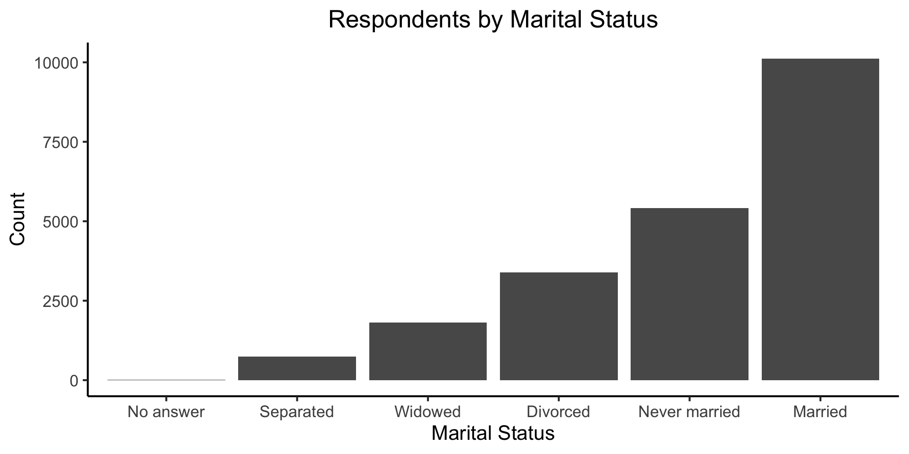

Introduction to the Tidyverse
Week 7, Part 2
jj1088@georgetown.edu
DSAN Summer Bootcamp 2024
Georgetown University
Overview
- What is “tidy” data? (Next slide)
- Tidyverse = “universe” of add-on libraries for R, which assume tidy data so as to streamline data cleaning/analysis!
Tidy Data
- Every row represents an observation
- Every column represents an attribute
- Every cell contains a value \(V_{{\color{#E69F00}i}{\color{#56B4E9}j}}\) = attribute \(j\) for observation \(i\)
| Var A | Var B | |
|---|---|---|
| Obs 1 | Val 1A | Val 1B |
| Obs 2 | Val 2A | Val 2B |
| id | name | flights |
|---|---|---|
| DCA | Reagan National | 11.55 |
| BWI | Baltimore-Wash Int'l | 11.15 |
| IAD | Dulles International | 10.27 |
Tidy Data Check
- Choose a row, take note of its ID
- Go through values in row, asking yourself: is this the value of some attribute of [observation]?
| id | var | value |
|---|---|---|
| DCA | name | Reagan National |
| DCA | flights | 11.55 |
| BWI | name | Baltimore-Wash Int'l |
| BWI | flights | 11.15 |
| IAD | name | Dulles International |
| IAD | flights | 10.27 |
Observation IDs Can Be Tuples!
| country | year | cases | population |
|---|---|---|---|
| Afghanistan | 1999 | 745 | 19987071 |
| Afghanistan | 2000 | 2666 | 20595360 |
| Brazil | 1999 | 37737 | 172006362 |
| Brazil | 2000 | 80488 | 174504898 |
| China | 1999 | 212258 | 1272915272 |
| China | 2000 | 213766 | 1280428583 |
✅ Tidy! Here we pass the “Tidy Data Check” since 745 is a property of [Afghanistan in 1999]: its number of TB cases
| country | year | type | count |
|---|---|---|---|
| Afghanistan | 1999 | cases | 745 |
| Afghanistan | 1999 | population | 19987071 |
| Afghanistan | 2000 | cases | 2666 |
| Afghanistan | 2000 | population | 20595360 |
| Brazil | 1999 | cases | 37737 |
| Brazil | 1999 | population | 172006362 |
❌ Not Tidy! Here we fail the Tidy Data Check since cases is not a property of [Afghanistan in 1999]
So… How Do We Get Our Data Into Tidy Form?
The Tidyverse
 dplyr |
 ggplot2 |
 forcats |
 tibble |
 readr |
 stringr |
 tidyr |
 purrr |
readr
Homepage | Overview (R4DS) | PDF Cheatsheet
Two key functions: read_csv(), write_csv() (Bonus: read_delim() if others fail)
Warning! read_csv() vs. read.csv()
Note that these are not the same as R’s built-in read.csv() and write.csv()! The built-in R functions will produce a plain data.frame object, not a tibble
- Can handle URLs as well!
- Share data+code in seconds by using in combination with GitHub Gist
- (No
read_csv()path issues either 😉) - Gist dataset
gdp_df <- read_csv("https://gist.githubusercontent.com/jpowerj/fecd437b96d0954893de727383f2eaf2/raw/fec58507f7095cb8341b229d6eb74ce53232d663/gdp_2010.csv")
gdp_df |> head(6)| name | code | year | value |
|---|---|---|---|
| Afghanistan | AFG | 2010 | 15936800636 |
| Albania | ALB | 2010 | 11926953259 |
| Algeria | DZA | 2010 | 161207268655 |
| American Samoa | ASM | 2010 | 576000000 |
| Andorra | AND | 2010 | 3355695364 |
| Angola | AGO | 2010 | 82470913121 |
tibble
Homepage | Overview (R4DS) | PDF Cheatsheet
Replaces R’s built-in data.frame, but retains syntax for backwards compatibility:
- Provides a surprisingly useful function:
tribble()(tibble defined row-by-row)
dplyr
dplyr
select():
arrange():
| country | year | cases | population |
|---|---|---|---|
| Afghanistan | 1999 | 745 | 19987071 |
| Afghanistan | 2000 | 2666 | 20595360 |
| Brazil | 1999 | 37737 | 172006362 |
| Brazil | 2000 | 80488 | 174504898 |
| China | 1999 | 212258 | 1272915272 |
| China | 2000 | 213766 | 1280428583 |
| country | year | cases | population |
|---|---|---|---|
| China | 2000 | 213766 | 1280428583 |
| China | 1999 | 212258 | 1272915272 |
| Brazil | 2000 | 80488 | 174504898 |
dplyr
mutate():
dplyr
summarize():
The Tidyverse in Action
- Let’s walk through a common data-analysis task (data cleaning and merging), seeing how the
readr,tibbleanddplyrfunctions help us!
Merging Data
- The task: Analyze relationship between population and GDP (in 2000)
- The data: One dataset on population in 2000, another on GDP in 2000 and 2010
- Let’s get the data ready for merging using R
gdp_df <- read_csv("https://gist.githubusercontent.com/jpowerj/c83e87f61c166dea8ba7e4453f08a404/raw/29b03e6320bc3ffc9f528c2ac497a21f2d801c00/gdp_2000_2010.csv")
gdp_df |> head(5)| Country Name | Country Code | Year | Value |
|---|---|---|---|
| Afghanistan | AFG | 2010 | 15936800636 |
| Albania | ALB | 2000 | 3632043908 |
| Albania | ALB | 2010 | 11926953259 |
| Algeria | DZA | 2000 | 54790245601 |
| Algeria | DZA | 2010 | 161207268655 |
Selecting/Filtering in Action
Let’s keep just the rows containing data from 2000, drop extraneous columns, and then rename the remaining columns to get rid of the spaces
gdp_2000_df <- gdp_df |>
select(`Country Name`,Year,Value) |>
filter(Year == "2000") |>
rename(country=`Country Name`, year=`Year`, gdp=`Value`)
gdp_2000_df |> write_csv("assets/gdp_2000.csv")
gdp_2000_df |> head()| country | year | gdp |
|---|---|---|
| Albania | 2000 | 3632043908 |
| Algeria | 2000 | 54790245601 |
| Andorra | 2000 | 1434429703 |
| Angola | 2000 | 9129594819 |
| Antigua and Barbuda | 2000 | 830158769 |
| Argentina | 2000 | 284203750000 |
Switching to Python for Merging!
- Remember that we’re using Quarto, so we can switch to Python whenever we’d like!
- Pandas provides an easy-to-use
df.merge(other_df), let’s use it 😎
(see Appendix Slides → for merging via Tidyverse)
Reshaping Data
Sometimes you can’t merge because one of the datasets looks like the table on the left (non-tidy), but we need it to look like the table on the right (tidy)…
In data-cleaning jargon, this dataset is long (more than one row per observation)
In data-cleaning jargon, this dataset is wide (one row per obs; usually tidy)
Long-to-Wide: pivot_wider()
pivot_wider() Documentation (part of tidyr)
wide_df <- table2 |> pivot_wider(
id_cols = c(country, year),
names_from = type,
values_from = count
)
wide_df| country | year | cases | population |
|---|---|---|---|
| Afghanistan | 1999 | 745 | 19987071 |
| Afghanistan | 2000 | 2666 | 20595360 |
| Brazil | 1999 | 37737 | 172006362 |
| Brazil | 2000 | 80488 | 174504898 |
| China | 1999 | 212258 | 1272915272 |
| China | 2000 | 213766 | 1280428583 |
Wide-to-Long: pivot_longer()
pivot_longer() Documentation (part of tidyr)
long_df <- wide_df |> pivot_longer(
cols = c(cases, population),
names_to = "var",
values_to = "val"
)
long_df |> head()| country | year | var | val |
|---|---|---|---|
| Afghanistan | 1999 | cases | 745 |
| Afghanistan | 1999 | population | 19987071 |
| Afghanistan | 2000 | cases | 2666 |
| Afghanistan | 2000 | population | 20595360 |
| Brazil | 1999 | cases | 37737 |
| Brazil | 1999 | population | 172006362 |
Appendix: The Rest of the Tidyverse
forcatsreadrstringrtidyrpurrrlubridate*
forcats
Homepage | Overview | Cheatsheet
- Utilities for working with factor variables (
R’s data structure for categorical variables) - factors = data + levels:
Code
[1] "Jan" "Jan" "Feb" "Dec"[1] Jan Jan Feb Dec
Levels: Jan Feb Mar Apr May Jun Jul Aug Sep Oct Nov DecFactors for Ordering Plot Elements
Without forcats:

Sorting Barplots with fct_infreq()
Recoding/Combining Categories
Automatically combining using fct_lump():
Manually Combining using fct_recode():
Code
gss_cat |>
mutate(partyid = fct_recode(partyid,
"Republican" = "Strong republican",
"Republican" = "Not str republican",
"Independent" = "Ind,near rep",
"Independent" = "Ind,near dem",
"Democrat" = "Not str democrat",
"Democrat" = "Strong democrat",
"Other" = "No answer",
"Other" = "Don't know",
"Other" = "Other party"
)) |>
count(partyid)| partyid | n |
|---|---|
| Other | 548 |
| Republican | 5346 |
| Independent | 8409 |
| Democrat | 7180 |
purrr: Functional Programming
Homepage | Overview | Cheatsheet | Tutorials, with Applications
Provides an anonymous function operator ~, arguments get named .x, .y:
lubridate*
Appendix 2: Wide-to-Long in Base R with gather()
2024 DSAN Bootcamp W07-2: Tidyverse